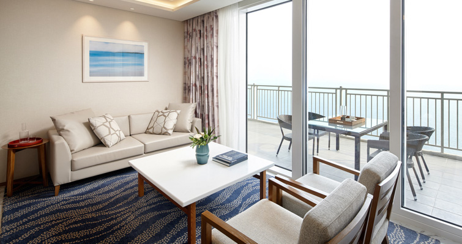

    <div class="header-container" style="display: flex; align-items: center; justify-content: space-between;">
        <div class="col-lg-12">
            <h2>Venue</h2>
            <p>RTCSA 2024 will be held in conjunction with NVMSA 2024 at the <a href="https://www.lotteresort.com/sokcho/en/about">Lotte Resort Sokcho</a>, located near the beautiful Seoraksan Mountain on the East Sea coast of Korea. Sokcho is one of the largest cities in Korea, known for its natural scenery, including beaches and mountains.</p>
            <p>Sokcho offers various attractions for visitors. Seoraksan National Park provides outdoor activities like hiking with scenic views. The city’s beaches offer relaxation and water sports opportunities. The Sokcho Market is a place to experience local food and shop for traditional Korean items. Cultural and historical experiences can be found at the Sokcho City Museum and nearby historical sites.</p>
            <div>
                
                
            </div>
            <p>&nbsp;</p>
        </div>
    </div>
